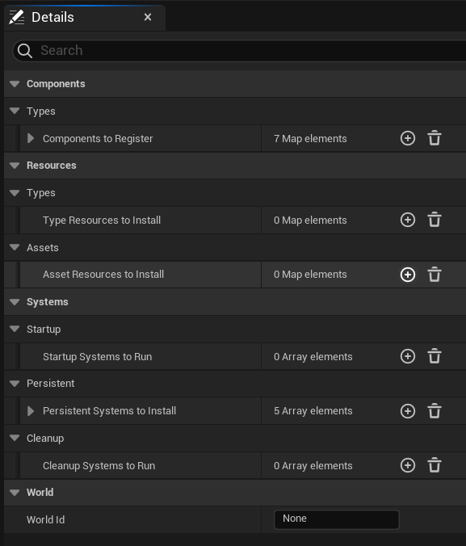
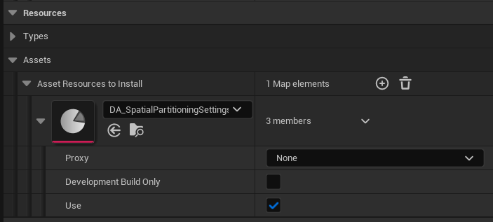
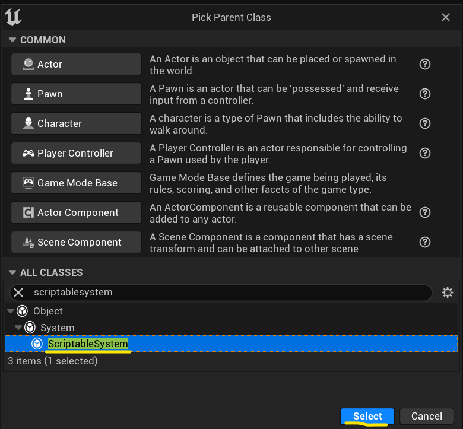
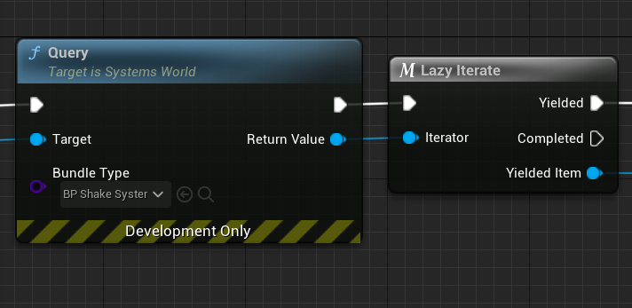
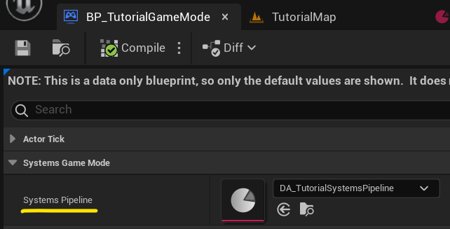
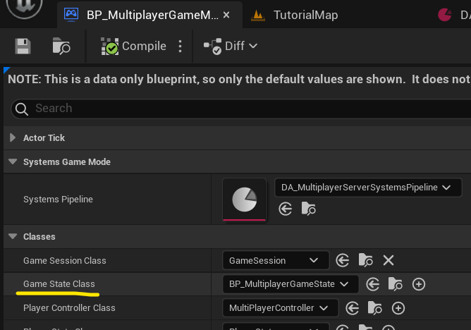

Pipelines
Table of contents
Explanation and setup
See USystemsPipeline.
Systems pipeline is a data asset that describes configuration of a single systems world:
its components, resources and systems that should be installed for new systems world.
Given pipeline is then assigned to either ASystemsGameMode or
ASystemsGameState to automatically create and destroy dedicated systems world.
Having systems pipeline defined in a data asset simplifies systems world setup and gives more flexibility to game designers so they can balance and test special cases and new game features without asking programmers to take their time and make changes to the setup.

World Id- ID under which this pipeline systems world will be registered globally. Usually there is gonna be single systems world so it's best to leaveNonehere, but in rare cases there might be sometimes a need to for multiple systems worlds in the game at once so here user can specify that.
Components
See components architecture book page.
List of all component types that are gonna be recognized by this systems world.

Development Build Only- Ensures this component will be registered in development builds only (and editor builds).Use- Useful for quickly disabling given component from the pipeline without actually removing it, can be used for quick dirty tests.
Resources
See resources architecture book page.
Type resources
List of type resources to install.
Type resources are usually just a typical UObject-based
game managers, 3rd-party library wrappers, data shared runtime data cache/storage and such.

Asset resources
List of asset resourecs to install.
Asset resources are purely data (either baked data sources or systems settings) that will be used by systems.

Development Build Only- Ensures this resource will be registered in development builds only (and editor builds).Use- Useful for quickly disabling given resource from the pipeline without actually removing it, can be used for quick dirty tests.
Systems
See systems architecture book page.
Here we list all of the systems that are gonna be used by this pipeline's systems world.
Order of systems in the list represents order of their execution!

Template- TemplateUSystem-based object that can be configured in-place.Development Build Only- Ensures this system will be registered in development builds only (and editor builds).Use- Useful for quickly disabling given system from the pipeline without actually removing it, can be used for quick dirty tests.
Note the difference between category of systems:
Startup- Runs only at systems world installation.Persistent- Runs on every game frame.Cleanup- Runs only at systems world uninstallation.
Commonly used template types:
Stateful systems
Stateful systems are ones that can have configuration properties put in them and/or can hold
internal state (for example to cache some values between next system runs, change detection
for example). User makes them by inheriting directly from USystem class.
Stateless systems
Stateless systems are basically lambdas/functions registered into FSystemsReflection.

The reason for lambda systems to be registered is that Unreal doesn't come with it's own global
function reflection so we have to put these into a dedicated registry ourselves, so we can assign
them in ULambdaSystem's Function Name property.
Every game or plugin module that exposes its lambda systems, has to register them in module
StartupModule and ShutdownModule methods like this:
#include "Tutorial.h"
#include "Systems/Public/SystemsReflection.h"
#include "Tutorial/Systems/Persistent/TutorialGoToSystem.h"
#include "Tutorial/Systems/Persistent/TutorialMoveTowardsTargetSystem.h"
#include "Tutorial/Systems/Persistent/TutorialMovementSystem.h"
#include "Tutorial/Systems/Persistent/TutorialSelectActorsSystem.h"
#define LOCTEXT_NAMESPACE "FTutorialModule"
#define SYSTEMS_NAMESPACE "Tutorial"
void FTutorialModule::StartupModule()
{
REGISTER_SYSTEM_FUNCTION(TutorialGoToSystem);
REGISTER_SYSTEM_FUNCTION(TutorialMoveTowardsTargetSystem);
REGISTER_SYSTEM_FUNCTION(TutorialMovementSystem);
REGISTER_SYSTEM_FUNCTION(TutorialSelectActorsSystem);
}
void FTutorialModule::ShutdownModule()
{
UNREGISTER_SYSTEM_FUNCTION(TutorialGoToSystem);
UNREGISTER_SYSTEM_FUNCTION(TutorialMoveTowardsTargetSystem);
UNREGISTER_SYSTEM_FUNCTION(TutorialMovementSystem);
UNREGISTER_SYSTEM_FUNCTION(TutorialSelectActorsSystem);
}
#undef LOCTEXT_NAMESPACE
#undef SYSTEMS_NAMESPACE
IMPLEMENT_GAME_MODULE(FTutorialModule, Tutorial);
Blueprint systems
Blueprint systems are systems made for quick and dirty prototyping by technical designers and content creators, they serve purely as final reference for programmers to translate them into native C++ systems. They exists exactly for scenarios where technical designer or content creator has an idea for a game feature they want to quickly make and test its viability, without bothering programmers to put their hands into every aspect of it, making feature design phase much faster and removing every back-and-forth between programmers and idea owners.
Blueprint systems are made up of two objects:
- Query blueprint with public properties that represents what components (and optionally actor) query expects to iterate on.
- System blueprint with
OnRunevent that performs one or more queries on systems world.
Here is example of creating blueprint systems:
-
Create new game object that inherits from
UObject:
And name it
BP_ShakeSystemQuery. -
Create public properties of actor/scene component types (and optionally an actor) your system query wants to iterate on:

-
Create new game object that inherits from
UScriptableSystem:
And name it
BP_ShakeSystem. -
Create
System World Querynode and assignBP_ShakeSystemQueryobject class:
With this we tell tis query iterator it will yield
BP_ShakeSystemQueryobjects with requested components and actor assigned to its fields. -
Create
Lazy Iteratenode:
Since
Queryreturns a lazy iterator object (you can read about lazy iterators in this architecture book page), this node is aFor Eachequivalent, to iterate over this iterator elements. -
Apply changes to actor offset component we got from yielded query object:

Using pipeline data assets
While you can call USystemsPipeline::Install and USystemsPipeline::Uninstall
directly to install and uninstall given pipeline systems world globally, it is useful to have that automated,
and for that these are game objects that do this for you, based on pipeline data asset assigned to them
in the editor:
Systems game mode
See ASystemsGameMode.
Consider using it to install pipeline that has to run singleplayer or multiplayer server game logic (since game modes are spawned only there).
-
Create game mode that inerits from
ASystemsGameMode:
And name it
BP_TutorialGameMode. -
Assign
USystemsPipelinedata asset intoSystems Pipelineproperty:
Systems game state
See ASystemsGameState.
Consider using it to install pipeline that has to run multiplayer client game logic (internally it will enforce to install only on multiplayer client).
-
Create game state that inerits from
ASystemsGameState:
And name it
BP_TutorialGameState. -
Assign
USystemsPipelinedata asset intoSystems Pipelineproperty:
-
Additionally you assign this game state class in its sibling game mode:

To make server game mode spawn this game state with its pipeline on clients.
Documentation built with Unreal-Doc v1.0.5 tool by PsichiX